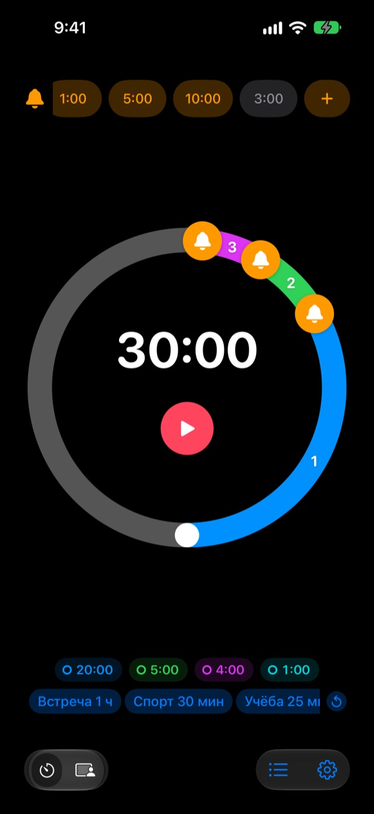
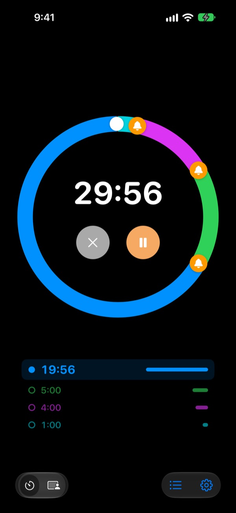
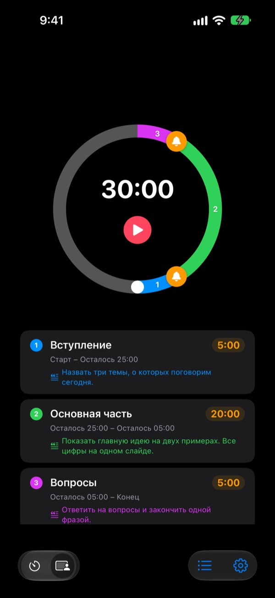
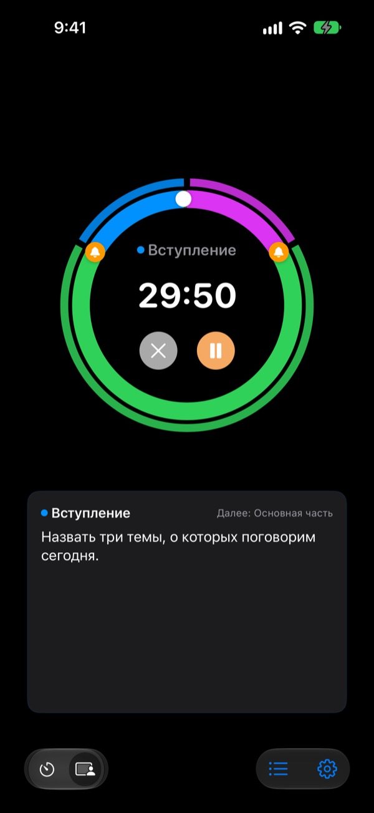

Не когда всё кончилось,
а до того
За 5 минут до конца доклада, за 3 до конца встречи. Rereminder подаёт сигнал в каждый выбранный вами момент, и не нужно то и дело поглядывать на часы.
Сигналы заранее бесплатны и без ограничений. iPhone, Apple Watch и Mac.

Попробуйте прямо здесь
Выберите длительность и сигналы и нажмите красную кнопку. Минута проходит за секунду, и каждый сигнал звучит в свой момент.
Таймер звонил, когда было уже поздно?
Обычный таймер звонит только на нуле. Доклад заканчивается раньше выводов, урок обрывается без итогов, а встреча налезает на следующую, так ничего и не решив. Нужен не сигнал о том, что время вышло, а сигнал, пока ещё есть время закончить.
Предупреждения заранее, сколько нужно
Перетащите колокольчики на шкале за 10, 5 или 1 минуту до конца или в любое другое место. Ограничений нет, и у каждого сигнала может быть свой текст, например «Закругляйся со слайдами».
Даже с выключенным экраном оставшееся время видно на экране блокировки и в Dynamic Island, а Apple Watch мягко постучит по запястью.

Разбейте выступление на этапы
Вступление 5 минут, основная часть 20, вопросы 5. Дайте каждому этапу название и текст. При каждой смене этапа приходит сигнал с его названием, и регламент соблюдается сам собой. (Pro)

Что говорить сейчас, видно на экране
Во время выступления крупно показан текст текущего этапа и следующий этап. Если время вышло, отсчёт не останавливается на нуле и показывает, насколько вы вышли за рамки. (Pro)

Начать можно в три шага
- 1
Задайте время
Покрутите шкалу или коснитесь времени и введите его. Один оборот это 60 минут, два оборота 120.
- 2
Расставьте сигналы
Коснитесь метки вроде 1:00 или 5:00 вверху или перетащите колокольчик на шкалу.
- 3
Запустите и забудьте
Заблокируйте iPhone. iPhone и Apple Watch подадут сигнал в каждый заданный момент.
Самые частые настройки
- Доклад на 20 минут
- за 5 мин «Переходи к выводам», за 1 мин «Благодарность»
- Урок на 45 минут
- за 10 мин «Объяснить домашнее задание», за 3 мин «Итоги»
- Совещание на 30 минут
- за 5 мин «Зафиксировать решения»
- Занятие пилатесом или йогой
- Режим этапов, по этапу на каждую связку (Pro)
- Учёба 25 минут
- за 5 мин, потом перерыв
- Отдых между подходами 3 минуты
- за 30 с «Готовься к следующему подходу»
- Менторская встреча на час
- за 15 и за 5 мин
Настройки, которыми пользуетесь часто, сохраните как шаблон и запускайте одним касанием (начиная с плана «Память»). Запускать и останавливать таймер можно и через Быстрые команды и Siri.
Сигналы заранее бесплатны. Платить нужно, только чтобы он запоминал.
Бесплатно
- Сигналы заранее без ограничений
- Свой текст для каждого сигнала
- Live Activity на экране блокировки и в Dynamic Island
- Сигналить, пока не ответите, и завершать будильником
- Приложение для Apple Watch и строка меню на Mac
- Все цвета темы
Память · Pro
- Память: сохраняйте настройки как шаблоны и запускайте одним касанием
- Память: при новом запуске всё как вы оставили
- Pro: всё из «Памяти» плюс режим этапов с названиями и текстами
- Pro: переработка, история и статистика
Для каждого плана можно выбрать годовую подписку или разовую покупку навсегда. Режим этапов, переработку и историю можно несколько раз попробовать до оплаты.
Без рекламы. А Вечный пропуск откроет все приложения Leeo.
Частые вопросы
Сигнал не сработал.
Почти всегда дело в разрешениях или режиме фокусирования. Проверьте разрешение на уведомления в приложении: Настройки › Способ оповещения. Если пользуетесь фокусированием, добавьте Rereminder в разрешённые приложения в Настройках iOS › Фокусирование. В бесшумном режиме будет только вибрация. Если Rereminder попал в Настройки › Уведомления › Доставка по расписанию, сигналы копятся и приходят позже, уберите его оттуда.
Замечу ли я конец в бесшумном режиме?
Да. Включите «Завершать будильником», и звонок прозвучит громко даже в бесшумном режиме или при фокусировании. С «Сигналить, пока не отвечу» сигнал повторяется, пока вы не нажмёте «Стоп» или «Отложить» в уведомлении.
Apple Watch не синхронизируются.
Откройте в приложении Настройки › Мои устройства, там видно, какого шага не хватает. Часы должны быть объединены в пару с этим iPhone, на них должно быть установлено Rereminder, и после установки его нужно один раз открыть на часах. Дальше таймер передаётся, даже если приложение на часах закрыто.
Mac показан как «не подключён».
«Подключён» означает, что приложение было открыто на этом Mac в последние 10 минут, поэтому только что проснувшийся Mac появится через несколько минут. На обоих устройствах нужен один и тот же аккаунт iCloud с включённым iCloud Drive. Для Mac нужна macOS 26 или новее.
Оплатил, но ничего не открылось.
Нажмите «Восстановить покупки» на экране планов, войдя в тот же Аккаунт Apple, с которого платили. Покупки навсегда возвращаются даже после удаления приложения или смены устройства.
Сохранённые шаблоны заблокированы.
Они никуда не делись. Без «Памяти» или Pro они остаются на экране под замком и откроются сразу после покупки.
Как вернуть деньги?
Возвратами занимается Apple. Отправьте запрос на reportaproblem.apple.com из того Аккаунта Apple, с которого платили. Если что-то сломалось, напишите и мне, чтобы следующий человек с этим не столкнулся.
Можно попробовать без установки?
Откройте m1zz.github.io/rereminder на iPhone, и таймер сразу запустится как App Clip. Шкала и сигналы на месте, а шаблоны, режим этапов и приложение для часов есть в полной версии.
На каких устройствах работает?
iPhone с iOS 26 или новее, Apple Watch с watchOS 11.6 или новее и Mac с macOS 26 или новее. iPad пока не поддерживается. Приложение доступно на 24 языках.
Где хранятся мои данные?
Таймеры, шаблоны, названия этапов, тексты и история остаются на устройстве и удаляются вместе с приложением. Приложение отправляет только анонимную статистику использования, которая помогает его улучшать. Что именно, написано в политике конфиденциальности.
Вопросы или пожелания? Пишите на leeo@kakao.com. Обычно отвечаю за 2–3 дня.